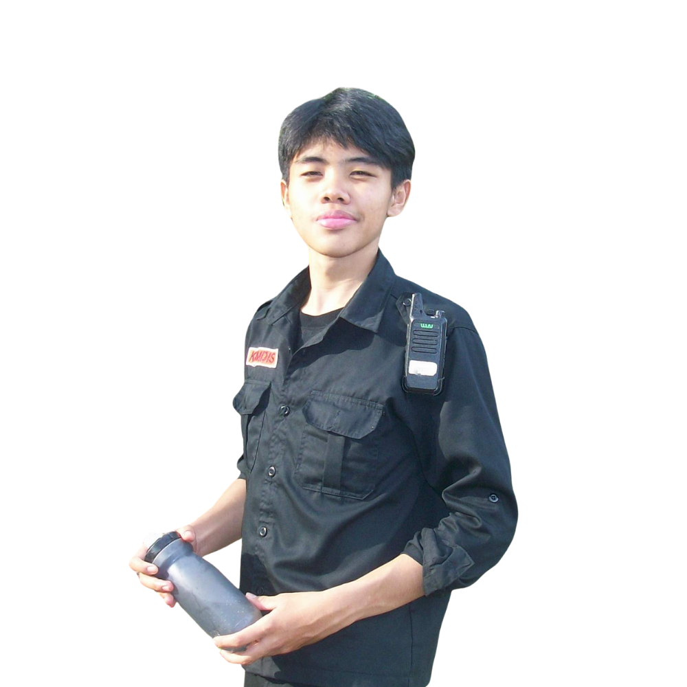
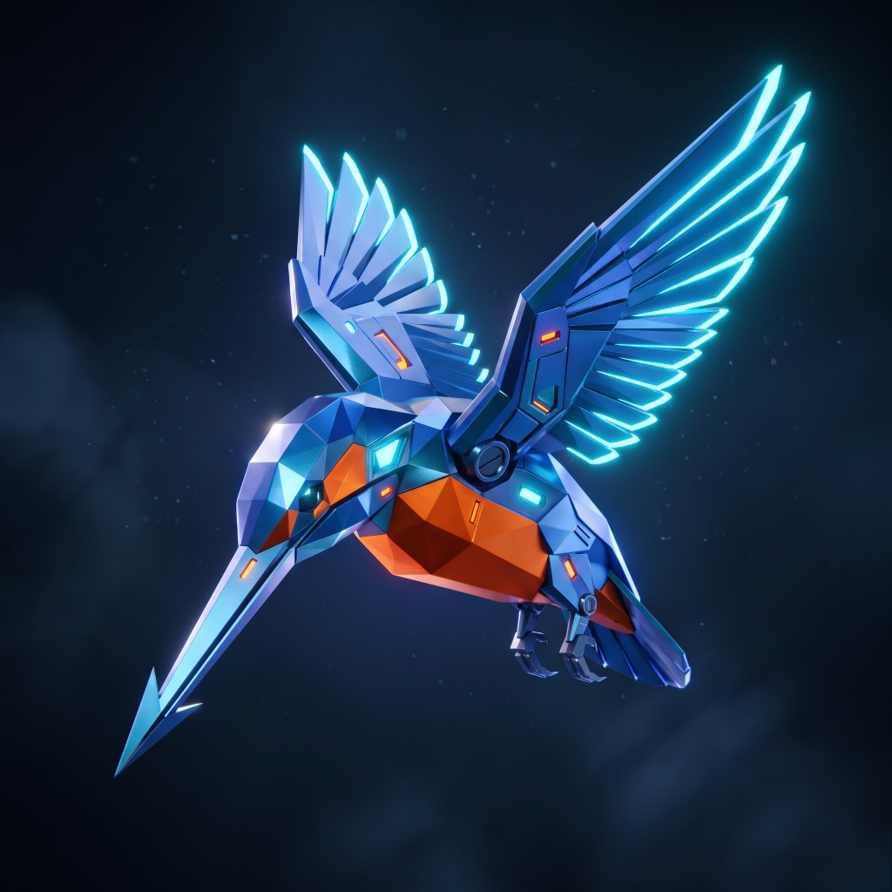
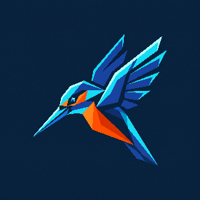

Lutfi Alhamsyah (Opik)
Product-Minded Technologist yang membaca peta besar sistem secara utuh, menyelaraskan tim, dan mengeksekusi solusi digital berbasis AI/ML, Cloud Computing, dan UI/UX dengan presisi tinggi.
"Map the sky, strike the target." — Hiduplah seperti Larry: berani ambil risiko, disiplin, dan langsung mengeksekusi ide sampai tuntas.

Sorotan Proyek, Kepemimpinan & Aktivitas Terbaru
Arketipe The Tactical Catalyst
Sinergi ekosistem teknis opikpixel dan eksplorasi desain visual kropik.
Lutfi Alhamsyah (Opik)
INFJ • Strategic Planner & Fast Executor
Fokus membangun produk digital yang tajam secara arsitektur dan bersih secara visual. Terbiasa menjembatani dokumen kebutuhan produk (PRD), otomasi alur kerja AI, reliabilitas cloud, dan kepemimpinan tim lintas fungsi tanpa terjebak teori kosong.
IT Product & PM
Menyusun PRD, roadmap Agile Kanban, tata kelola risiko, dan menyelaraskan eksekusi tim.
AI/ML & Engineering
Merancang sistem multi-agent AI, model klasifikasi/NLP, dan pipeline CI/CD modern.
UI/UX & Visual Lab
Menerjemahkan kompleksitas teknis menjadi antarmuka yang bersih, responsif, dan terukur.

3D CYCLES RENDER
GEOMETRIC BRAND LOGOMaskot Orix — simbol pemeta strategi yang menukik 45° mengeksekusi target dengan akurasi mutlak.
Proyek IT & Ekosistem GitHub
Live GitHub Pulse — @opikpixel
LIVE APISinkronisasi repositori publik langsung dari GitHub REST API
Arsip Visual & Master CV
Matriks Keahlian & Setup Sistem
Skala kapabilitas praktis: 4 Blok = Core Focus • 3 Blok = Practitioner • 2 Blok = Fundamental.
Simpul kristal interaktif penghubung strategi produk, rekayasa AI, dan eksekusi visual.
Mari Berkolaborasi & Bangun Solusi Presisi
Terbuka untuk kolaborasi proyek IT Product Management, eksplorasi AI/ML & Web, kepanitiaan teknologi, maupun diskusi komunitas. Pilih topik di samping untuk menyusun pesan cepat.